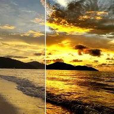

Seviyeler

Görselin seviyelerini giriş siyah/beyaz noktaları, gama ve çıkış siyah/beyaz noktalarıyla ayarlar.
Seviyeler, hangi parlaklığın saf siyah ve saf beyaz olacağını belirler. Gölgeleri daha koyu yapmak için Giriş Siyahı değerini yükseltin, vurguları daha parlak yapmak için Giriş Beyazı değerini düşürün. Gama, siyah ve beyaza dokunmadan orta tonları değiştirir. Çıkış Siyahı ve Çıkış Beyazı son aralığı sınırlar, soluk bir görünüm için.
Ayarlar
| Ayar | Tür | Aralık | Varsayılan |
|---|---|---|---|
| Giriş Siyahı | Sayı | 0 – 1 | 0.1 |
| Giriş Beyazı | Sayı | 0 – 1 | 0.85 |
| Gama | Sayı | 0.2 – 5 | 1 |
| Çıkış Siyahı | Sayı | 0 – 1 | 0 |
| Çıkış Beyazı | Sayı | 0 – 1 | 1 |